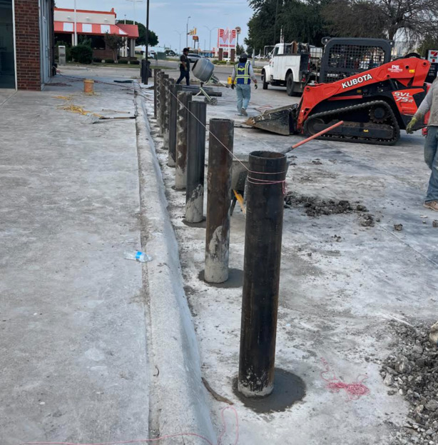

Previous Work
Residential Concrete Walkway
Guillen Concrete Cutting built a custom residential walkway.

Commercial Drivethru Expansion
Guillen Concrete Cutting expanded a commercial drivethru for Chick-fil-A.

Commercial Bollard Installation
Guillen Concrete Cutting installed bollards for a commercial building.
Commercial Concrete Cutting
Guillen Concrete Cutting took the challenge of cutting concrete at an angle for a commercial building.
Images were resized using Image Resizer.